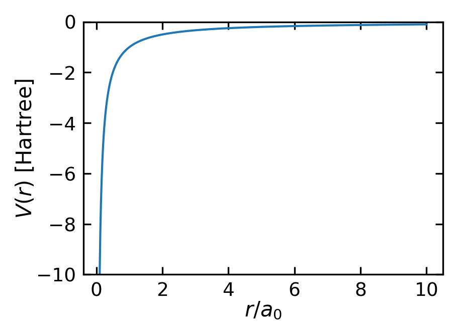

46 Angular Momentum and Spherical Potentials
We have so far covered a number of quantum mechanical systems, such as the particle in a box, the potential barrier and the harmonic oscillator. We would now like to discuss how stationary states of a matter wave look like in a potential that exhibits spherical symmetry
\[E_{\mathrm{pot}} = E_{\mathrm{pot}} \left( r \right) = V \left( r \right)\].
The Coulomb potential is plotted below in atomic units, where the energy is measured in Hartree and the distance in Bohr radii \(a_0\). In atomic units, one Hartree (Ha) corresponds to 27.211 eV and one Bohr radius \(a_0\) corresponds to 0.529 Å.
This type of potential exhibits spherical symmetry, meaning it depends only on the radial distance from the origin and is independent of angular coordinates — similar to the gravitational or Coulomb potential.
The Schrödinger equation then has the form in Cartesian coordinates
\[ \begin{aligned} 0 & = \hat{H} \, \psi \left( x,y,z \right) - E \, \psi \left( x,y,z \right)\\ 0 & = -\frac{\hbar^2}{2m} \nabla^2 \psi \left( x,y,z \right) + V \left( x,y,z \right) \psi \left( x,y,z \right) - E \, \psi \left( x,y,z \right) \mathrm{.} \end{aligned} \]
Ultimately this will allow us to analyze the hydrogen atom. The spherical symmetry of the potential brings along new conservation laws. According to Noether’s theorem, the conservation of angular momentum is a direct consequence of the spherical symmetry of the potential.
46.1 Operators, Commutators, and Expectation Values
Before we dive into the spherically symmetric potential solution, we would like to discuss some fundamental concepts of the quantum mechanics calculus, such as operators, commutators, and expectation values.
46.1.1 Operators
In quantum mechanics, physical observables like position, momentum, energy and angular momentum are represented by operators - mathematical objects that act on wavefunctions to give us measurable quantities. If you do a measurement in quantum mechanics, you apply an operator to a wavefunction to get a number as the outcome of your measurement. The most important operators in quantum mechanics are:
| Operator | Symbol | Action | Mathematical Form |
|---|---|---|---|
| Position | \(\hat{x}\) | Multiplies wavefunction by position | \(\hat{x}\psi(x) = x\psi(x)\) |
| Momentum | \(\hat{p}\) | Takes spatial derivative | \(\hat{p} = -i\hbar\frac{\partial}{\partial x}\) |
| Energy (Hamiltonian) | \(\hat{H}\) | Sum of kinetic and potential energy | \(\hat{H} = -\frac{\hbar^2}{2m}\frac{\partial^2}{\partial x^2} + V(x)\) |
| Angular Momentum | \(\hat{L}\) | Cross product of position and momentum | \(\hat{L} = \hat{r} \times \hat{p}\) |
These operators have several important properties:
Linearity: For any constants \(a\) and \(b\) and wavefunctions \(\psi_1\) and \(\psi_2\): \[\hat{A}(a\psi_1 + b\psi_2) = a\hat{A}\psi_1 + b\hat{A}\psi_2\]
Hermiticity: The expectation value of a physical observable must be real
The expected value of an operator \(\hat{A}\) is defined by the integral
\[\mathrm{E}[\hat{A}] = \int \psi^*(x)\,\hat{A}\,\psi(x)d\tau = \left(\int \psi^*(x)\,\hat{A}\,\psi(x)d\tau\right)^*,\]
which shows that the result must be equal to its own complex conjugate.
Eigenvalue equations: When an operator acts on certain special wavefunctions (eigenfunctions), it returns the same function multiplied by a constant (eigenvalue)
\[\hat{A}\psi = a\psi\]
The eigenvalues represent the possible measured values of the corresponding physical observable. This is why energy levels are quantized - they correspond to eigenvalues of the Hamiltonian operator.
Uncertainty of an observable in an eigenstateWhen an operator \(\hat{A}\) has eigenvalues \(a\), the wavefunction \(\psi\) is an eigenfunction of \(\hat{A}\):
\[\hat{A}\psi = a\psi\]
The uncertainty in measuring \(\hat{A}\) is given by:
\[\Delta A = \sqrt{\langle A^2 \rangle - \langle A \rangle^2}\]
For an eigenfunction, we can evaluate these expectation values:
\[\langle A \rangle = \int \psi^* \hat{A} \psi \, dx = \int \psi^* (a\psi) \, dx = a \int |\psi|^2 \, dx = a\]
\[\langle A^2 \rangle = \int \psi^* \hat{A}^2 \psi \, dx = \int \psi^* (a^2\psi) \, dx = a^2 \int |\psi|^2 \, dx = a^2\]
Therefore:
\[\Delta A = \sqrt{a^2 - a^2} = 0\]
This proves that there is no uncertainty in measuring an observable when the system is in an eigenstate of that observable. Thus when doing an experiment on a system that is in the eigenstate of the observable you are measuring, you will always get the same value for the observable.
Orthogonality: Eigenfunctions of Hermitian operators are orthogonal
Orthogonality can be expressed in integral form:
\[\int_{-\infty}^{\infty} \psi_i^*(x)\psi_j(x)dx = \delta_{ij}\]
For example, the eigenstates of an infinite potential well of width \(L\) are given by:
\[\psi_n(x) = \sqrt{\frac{2}{L}}\sin\left (\frac{n\pi x}{L}\right)\]
And their orthogonality can be verified:
\[\int_0^L \psi_m^*(x)\psi_n(x)dx = \frac{2}{L}\int_0^L \sin\left (\frac{m\pi x}{L}\right)\sin\left (\frac{n\pi x}{L}\right)dx = \delta_{mn}\]
46.1.2 Commutators
When operators don’t commute (\(\hat{A}\hat{B} \neq \hat{B}\hat{A}\)), the corresponding observables cannot be simultaneously measured with arbitrary precision. The most famous example is position and momentum:
\[[\hat{x},\hat{p}] = i\hbar\]
This non-commutativity leads directly to Heisenberg’s uncertainty principle:
\[\Delta x \Delta p \geq \frac{\hbar}{2}\]
46.1.3 Expectation values
The expectation value of an operator \(\hat{A}\) in a state \(\psi\) is given by:
\[\langle\hat{A}\rangle = \langle\psi|\hat{A}|\psi\rangle\]
This is the average value of the observable \(\hat{A}\) in the state \(\psi\). For example, if we want to measure the position of a particle, we use the position operator \(\hat{x}\). While any single measurement will yield one specific position value, if we repeat the measurement many times we will find the average position is given by:
\[\langle x \rangle = \int \psi^*(x) x \psi(x) dx\]
The expectation value of the momentum operator is particularly important, as it is related to the group velocity of the wavefunction:
\[\langle\hat{p}\rangle = \int\psi^*\hat{p}\psi dx = -i\hbar\int\psi^*\frac{\partial\psi}{\partial x}dx\]
Note that an eigenvalue can be an expectation value when the system’s wavefunction is an eigenfunction, but an expectation value is not necessarily an eigenvalue.
46.1.4 Example: Angular Momentum Operator
The angular momentum plays a key role in such spherically symmetric systems, as it is a conserved quantity due to the rotational symmetry of the potential. We will therefore discuss the angular momentum operator in more detail. The angular momentum operator is defined as the cross product of the position and momentum operators:
\[\vec{\hat{L}} = \vec{r} \times \vec{\hat{p}}\]
This relationship makes sense intuitively since classically, angular momentum is defined as \(\vec{L} = \vec{r} \times \vec{p}\). The quantum mechanical momentum is given by:
\[\vec{\hat{p}} = -i\hbar\nabla\]
When we calculate the cross product explicitly, we obtain the expressions for the components of the angular momentum that we’ll use extensively in solving the spherically symmetric potential:
\[ \begin{aligned} \hat{L}_x &= -i\hbar\left(y\frac{\partial}{\partial z} - z\frac{\partial}{\partial y}\right) \\ \hat{L}_y &= -i\hbar\left(z\frac{\partial}{\partial x} - x\frac{\partial}{\partial z}\right) \\ \hat{L}_z &= -i\hbar\left(x\frac{\partial}{\partial y} - y\frac{\partial}{\partial x}\right) \end{aligned} \]
The angular momentum squared operator \(\hat{L}^2\) is defined as: \[ \hat{L}^2 = \hat{L}_x^2 + \hat{L}_y^2 + \hat{L}_z^2 \]
and we can write down the square of the angular momentum operator in spherical coordinates:
\[ \hat{L}^2 = -\hbar^2\left[\frac{1}{\sin \left( \vartheta \right)} \frac{\partial}{\partial \vartheta} \left( \sin \left( \vartheta \right) \frac{\partial}{\partial \vartheta} \right) + \frac{1}{\sin^2 \left( \vartheta \right)} \frac{\partial^2}{\partial \varphi^2}\right] \]
Note
Note that the coordinate transformation from Cartesian to spherical coordinates is necessary to obtain the angular momentum operator in spherical coordinates.
\[ \begin{aligned} x & = r \sin \left( \vartheta \right) \cos \left( \varphi \right)\\ y & = r \sin \left( \vartheta \right) \sin \left( \varphi \right)\\ z & = r \cos \left( \vartheta \right) \mathrm{.} \end{aligned} \]
and the reverse transformation is given by
\[ \begin{aligned} r & = \sqrt{x^2 + y^2 + z^2}\\ \vartheta & = \arccos \left( \frac{z}{r} \right)\\ \varphi & = \arctan \left( \frac{y}{x} \right) \mathrm{.} \end{aligned} \]
The eigenfunctions of the angular momentum operator are the spherical harmonics \(Y_l^m \left( \vartheta, \varphi \right)\), which we will discuss in more detail later. The quantum number \(l\) denotes the magnitude of the angular momentum, while \(m\) is the projection of the angular momentum along the \(z\)-axis.
The eigenvalues of the angular momentum squared operator \(\hat{L}^2\) are given by
\[ \hat{L}^2 Y_l^m \left( \vartheta, \varphi \right) = \hbar^2 l \left( l+1 \right) Y_l^m \left( \vartheta, \varphi \right) \]
such that the magnitude of the angular momentum is quantized in units of \(\hbar\), i.e.
\[ \left| \vec{\hat{L}} \right| = \sqrt{l \left( l+1 \right)} \hbar \]
so that we know precisely the magnitude of the angular momentum.
The projection of the angular momentum along the \(z\)-axis is quantized in units of \(\hbar\) as well, i.e.
\[ \hat{L}_z Y_l^m \left( \vartheta, \varphi \right) = \hbar m Y_l^m \left( \vartheta, \varphi \right) \]
where \(m\) can take on values from \(-l\) to \(l\) in integer steps. Thus both the magnitude and the projection of the angular momentum are quantized in units of \(\hbar\) and can be measured precisely. Yet, the components of the angular momentum along the \(x\)- and \(y\)-axis are not precisely known, since the angular momentum is quantized along the \(z\)-axis.
Both the \(\hat{L}_x\) and the \(\hat{L}_y\) operators do not commute with the \(\hat{L}_z\) operator, i.e.
\[[\hat{L}_x, \hat{L}_z] = \hat{L}_x \hat{L}_z - \hat{L}_z \hat{L}_x\]
Using the expressions for \(\hat{L}_x\) and \(\hat{L}_z\):
\[\hat{L}_x = -i\hbar\left(y\frac{\partial}{\partial z} - z\frac{\partial}{\partial y}\right)\]
\[\hat{L}_z = -i\hbar\left(x\frac{\partial}{\partial y} - y\frac{\partial}{\partial x}\right)\]
First computing \(\hat{L}_x \hat{L}_z\): \[\hat{L}_x \hat{L}_z = (-i\hbar)^2\left(y\frac{\partial}{\partial z} - z\frac{\partial}{\partial y}\right)\left(x\frac{\partial}{\partial y} - y\frac{\partial}{\partial x}\right)\]
And \(\hat{L}_z \hat{L}_x\):
\[\hat{L}_z \hat{L}_x = (-i\hbar)^2\left(x\frac{\partial}{\partial y} - y\frac{\partial}{\partial x}\right)\left(y\frac{\partial}{\partial z} - z\frac{\partial}{\partial y}\right)\]
Subtracting and collecting terms leads to
\[[\hat{L}_x,\hat{L}_z] = i\hbar(-i\hbar)\left(y\frac{\partial}{\partial x} - x\frac{\partial}{\partial y}\right) = i\hbar \hat{L}_y\]
which directly shows that the \(\hat{L}_x\) and \(\hat{L}_z\) operators do not commute. The same is also true for the other components of the angular momentum.
\[ \left[ \hat{L}_x, \hat{L}_z \right] = i\hbar \hat{L}_y \]
\[ \left[ \hat{L}_y, \hat{L}_z \right] = -i\hbar \hat{L}_x \]
\[ \left[ \hat{L}_x, \hat{L}_y \right] = i\hbar \hat{L}_z \]
This non-commutativity of the angular momentum components arises fundamentally from the algebra of the angular momentum operators; it reflects the fact that only one component (typically the \(z\)-component) can be determined precisely at a time. While \(\hat{L}_z\) is quantized and its value is well defined, the \(x\) and \(y\) components remain uncertain. Specifically, the relation
\[ \hat{L}^2-\hat{L}_z^2 = \hat{L}_x^2 + \hat{L}_y^2 = \hbar^2 \left(l(l+1)-m^2\right) \]
represents the magnitude of the angular momentum projected onto the \(xy\)-plane. This formulation is correct and will be crucial later when using the angular momentum operator to solve the Schrödinger equation for the hydrogen atom. In that context, the quantum numbers \(l\) and \(m\) play a key role in determining the energy levels and wavefunctions.
Quantization and degeneracy of angular momentum
| \(l\) | Allowed \(m\) values | Name | Degeneracy |
|---|---|---|---|
| 0 | 0 | s | 1 |
| 1 | -1…+1 | p | 3 |
| 2 | -2…+2 | d | 5 |
| 3 | -3…+3 | f | 7 |
| 4 | -4…+4 | g | 9 |
| 5 | -5…+5 | h | 11 |
The names come from historical spectroscopic notation: sharp (s), principal (p), diffuse (d), and fundamental (f). After f, the letters continue alphabetically.